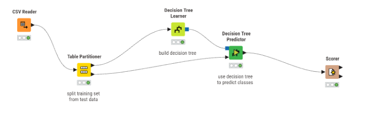
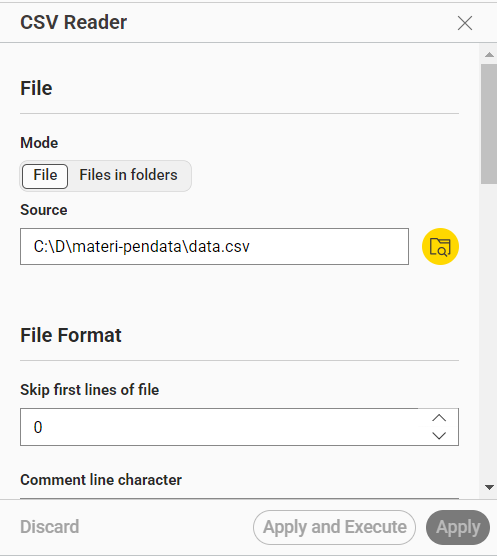
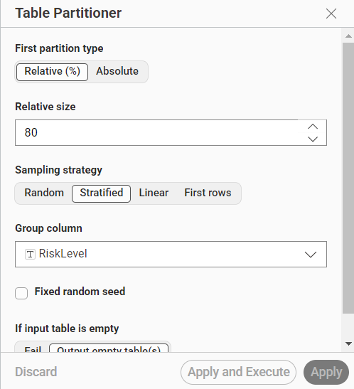
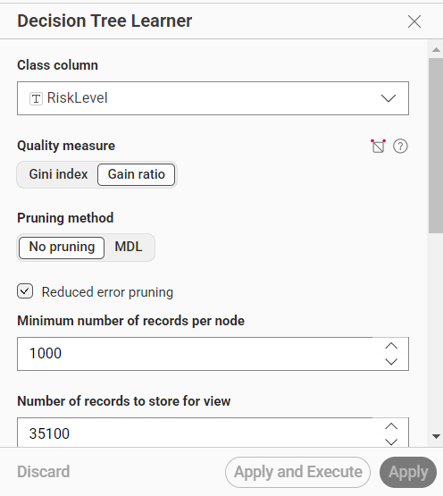
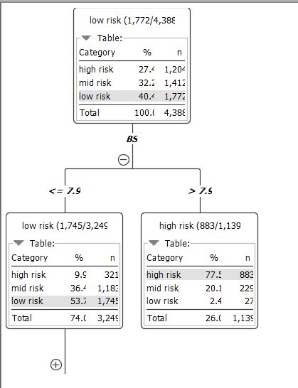
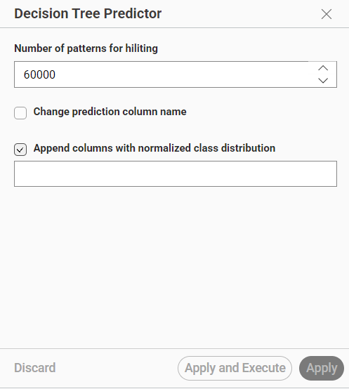
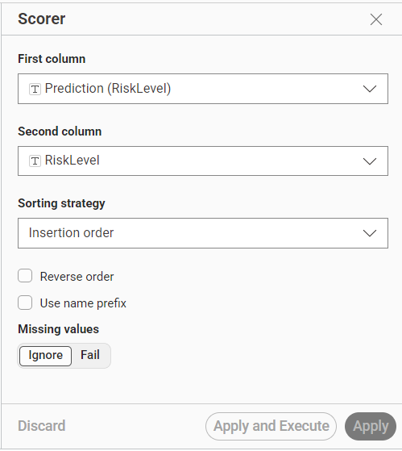

Analisa Data Menggunakan Pohon Keputusan (Decision Tree)#
1. Pendahuluan#
Analisa data menggunakan metode Decision Tree (Pohon Keputusan) dilakukan untuk melakukan klasifikasi terhadap tingkat risiko (RiskLevel) berdasarkan data yang tersedia.
Workflow ini dibuat menggunakan aplikasi KNIME Analytics Platform dengan beberapa node utama yaitu:
CSV Reader
Table Partitioner
Decision Tree Learner
Decision Tree Predictor
Scorer
Metode Decision Tree digunakan karena mudah dipahami, mampu menangani data klasifikasi, serta menghasilkan aturan keputusan yang dapat divisualisasikan dalam bentuk pohon.
2. Tujuan Analisa#
Tujuan dari workflow ini adalah:
Membagi data menjadi data training dan testing
Membuat model klasifikasi menggunakan Decision Tree
Melakukan prediksi terhadap data testing
Mengukur performa model menggunakan node Scorer
Mengetahui atribut yang paling berpengaruh terhadap tingkat risiko (
RiskLevel)
3. Workflow Decision Tree#

Workflow terdiri dari beberapa node utama berikut:
CSV Reader
Table Partitioner
Decision Tree Learner
Decision Tree Predictor
Scorer
4. Penjelasan Setiap Node#
4.1 CSV Reader#
Fungsi#
Node ini digunakan untuk membaca data dari file CSV.
Kegunaan#
Mengimpor data ke dalam KNIME
Menentukan tipe data setiap kolom
Menjadi sumber data utama workflow
Langkah Pembuatan dan Konfigurasi#
Drag node CSV Reader
Hubungkan dengan file dataset
Pilih file
.csvKlik Apply and Execute
Gambar Konfigurasi CSV Reader#

Output#
Dataset berhasil dimuat dan siap untuk diproses.
4.2 Table Partitioner#
Fungsi#
Node ini digunakan untuk membagi data menjadi:
Data Training
Data Testing
Konfigurasi yang Digunakan#
Parameter |
Nilai |
|---|---|
Relative Size |
80% |
Sampling Strategy |
Stratified |
Group Column |
RiskLevel |
Gambar Konfigurasi Table Partitioner#

Penjelasan Parameter#
a. Relative Size = 80%#
Artinya:
80% data digunakan untuk training
20% data digunakan untuk testing
b. Stratified Sampling#
Metode ini menjaga proporsi kelas tetap seimbang antara data training dan data testing.
Contoh: Jika:
40% low risk
30% mid risk
30% high risk
Maka pembagian training/testing tetap mengikuti proporsi tersebut.
c. Group Column = RiskLevel#
Kolom target yang dijadikan acuan pembagian stratifikasi.
Kegunaan Node#
Menghindari bias data
Memastikan model diuji pada data baru
Membantu evaluasi model lebih akurat
Langkah Pembuatan dan Konfigurasi#
Tambahkan node Table Partitioner
Hubungkan dari CSV Reader
Atur:
Relative (%) = 80
Sampling = Stratified
Group Column = RiskLevel
Klik Apply and Execute
Output#
Menghasilkan:
Port atas → Data Training
Port bawah → Data Testing
4.3 Decision Tree Learner#
Fungsi#
Node ini digunakan untuk membangun model Decision Tree berdasarkan data training.
Konfigurasi yang Digunakan#
Parameter |
Nilai |
|---|---|
Class Column |
RiskLevel |
Quality Measure |
Gain Ratio |
Pruning Method |
No Pruning |
Reduced Error Pruning |
Aktif |
Minimum Records per Node |
1000 |
Gambar Konfigurasi Decision Tree Learner#

Penjelasan Parameter#
a. Class Column = RiskLevel#
Kolom target yang akan diprediksi.
Kategori:
Low Risk
Mid Risk
High Risk
b. Quality Measure = Gain Ratio#
Digunakan untuk memilih atribut terbaik saat membentuk cabang pada pohon keputusan.
Kegunaan#
Mengurangi bias atribut
Membantu memilih split terbaik
Gain Ratio merupakan pengembangan dari Information Gain.
c. No Pruning#
Model tidak melakukan pemangkasan cabang pohon secara otomatis.
Dampak#
Pohon lebih detail
Risiko overfitting lebih tinggi
d. Reduced Error Pruning#
Digunakan untuk mengurangi kesalahan dalam proses klasifikasi.
Fungsi#
Menyederhanakan pohon
Mengurangi overfitting
e. Minimum Number of Records per Node = 1000#
Node hanya akan dipecah jika memiliki minimal 1000 data.
Tujuan#
Menghindari cabang terlalu kecil
Mengurangi noise
Langkah Pembuatan#
Tambahkan node Decision Tree Learner
Hubungkan data training
Pilih:
Class Column = RiskLevel
Quality Measure = Gain Ratio
Atur pruning
Execute node
5. Struktur Pohon Keputusan#
Gambar Hasil Decision Tree#

Root Node#
BS
Atribut BS menjadi faktor utama dalam menentukan klasifikasi risiko.
Aturan Decision Tree#
Rule 1#
Jika BS > 7.9
Maka = High Risk
Rule 2#
Jika BS <= 7.9 dan BS > 7.01
Maka = Low Risk
Rule 3#
Jika BS <= 7.01
Maka = Mid Risk
6. Analisa Hasil Pohon#
Root Node#
Jumlah data:
Kategori |
Persentase |
|---|---|
High Risk |
27.4% |
Mid Risk |
32.2% |
Low Risk |
40.4% |
Mayoritas data termasuk kategori Low Risk.
Cabang 1#
BS > 7.9
Hasil#
Dominan High Risk
Persentase High Risk = 77.5%
Kesimpulan#
Nilai BS tinggi sangat berpengaruh terhadap risiko tinggi.
Cabang 2#
BS <= 7.9
Hasil#
Dominan Low Risk
Kesimpulan#
Menunjukkan bahwa nilai BS lebih rendah cenderung aman.
Cabang 3#
BS <= 7.01
Hasil#
Dominan Mid Risk
Kesimpulan#
Menunjukkan area transisi risiko menengah.
7. Decision Tree Predictor#
Fungsi#
Node ini digunakan untuk melakukan prediksi terhadap data testing menggunakan model Decision Tree yang sudah dibuat.
Cara Kerja#
Input 1 → Model Decision Tree
Input 2 → Data Testing
Node akan menghasilkan kolom prediksi baru:
Prediction(RiskLevel)
Gambar Konfigurasi Decision Tree Predictor#

Langkah Pembuatan dan Konfigurasi#
Tambahkan node Decision Tree Predictor
Hubungkan:
Model dari Learner
Data testing dari Partitioner
Execute node
8. Scorer#
Fungsi#
Digunakan untuk mengevaluasi hasil prediksi dari model.
Konfigurasi#
Parameter |
Nilai |
|---|---|
First Column |
Prediction(RiskLevel) |
Second Column |
RiskLevel |
Gambar Konfigurasi Scorer#

Kegunaan#
Node ini menghitung:
Accuracy
Confusion Matrix
Precision
Recall
Cara Kerja#
Membandingkan:
Hasil prediksi model
Data asli sebenarnya
Langkah Pembuatan dan Konfigurasi#
Tambahkan node Scorer
Hubungkan output predictor
Pilih:
Prediction(RiskLevel)
RiskLevel
Execute node
9. Hasil Analisa#
Hasil Utama#
Atribut paling berpengaruh adalah
BSModel Decision Tree berhasil membagi data menjadi:
Low Risk
Mid Risk
High Risk
Nilai
BStinggi menunjukkan risiko tinggiModel dapat digunakan untuk klasifikasi risiko otomatis
10. Kelebihan Metode Decision Tree#
Kelebihan#
Mudah dipahami
Visualisasi sederhana
Cepat dalam proses klasifikasi
Tidak memerlukan proses normalisasi data
11. Kekurangan Metode Decision Tree#
Kekurangan#
Rentan overfitting
Sensitif terhadap perubahan data
Akurasi dapat menurun pada data kompleks
12. Kesimpulan#
Berdasarkan workflow yang telah dibuat:
Proses klasifikasi berhasil dilakukan menggunakan metode Decision Tree.
Node utama yang digunakan adalah:
CSV Reader
Table Partitioner
Decision Tree Learner
Decision Tree Predictor
Scorer
Variabel BS menjadi faktor utama dalam menentukan tingkat risiko.
Model mampu melakukan prediksi terhadap kategori risiko dengan baik.
Evaluasi model dilakukan menggunakan node Scorer untuk mengetahui performa klasifikasi.